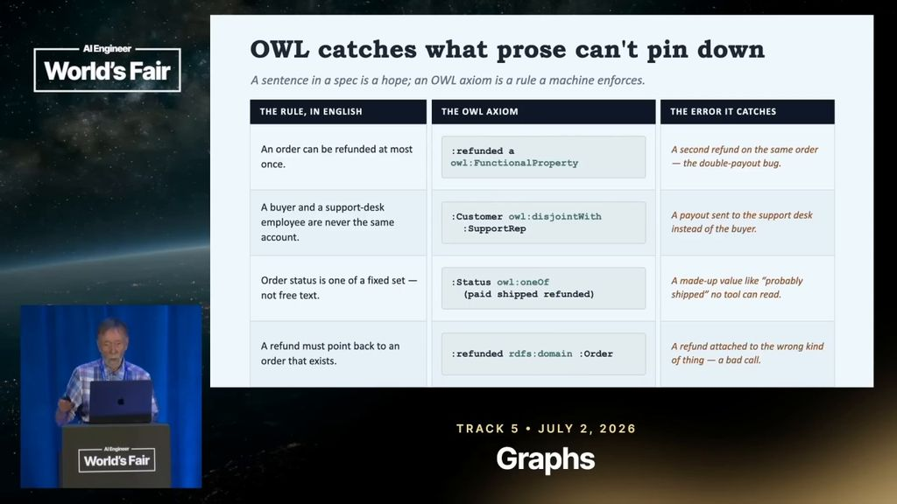

Point it at the builders you trust. It watches every talk, keeps every sentence and every line that crossed the screen, and answers with the second it happened — the sentence, the slide, and the second, assembling on the right.
three canned searches, verified against the live corpus.
this page makes no network calls.

Every one of these is a moment your agent can hand back mid-task: the sentence a builder actually said, the text the machine read off the screen behind them, and a link that lands on the second. When a leg has nothing to give, it says so — it never quietly narrows the answer.
heard — every sentence spoken, aligned to the word, so the link lands mid-sentence instead of at the top of a chunk.
seen — every line that crossed the screen, kept with the box it was read from. That box is drawn on the frame, never nudged to fit.
the frame itself — kept as evidence, so a moment with nothing readable on screen is still a moment.
Every frame below was read out of a talk this corpus has already watched all the way through — ids and timecodes verbatim. Point it at a conference, a channel, a creator, and their knowledge compounds into yours.
An agent, on the real protocol, answering a question no single talk answers — and citing five speakers. Four Sonnet agents drove the live stack for an afternoon; this is the one that was asked to answer properly, with citations, the way ask mode does.
What do speakers disagree about when it comes to LLM as a judge?
call search {"q":"LLM as a judge","content_type":"transcript","max_per_video":1,"limit":6}
← 6 moments · 6 talks · leg: transcript · relevance-first
They agree it is the default and disagree about whether it deserves to be. Two positions, and a third group that ships it anyway:
“And LLM as a judge doesn't really work either because LLMs don't have good taste in writing.”
Nick Heiner · Surge AI · When Will The Benchmaxxing Plague End? · 16:01 · youtu.be/-npY6XjM8CQ?t=961
“Agent as a judge is about adaptive dynamic analysis. LLM as a judge just gives you a fixed rubric with these fixed scores.”
Aparna Dhinakaran · Arize AI · The Future of Evals · 4:07 · youtu.be/q2JrUKBMf0w?t=247
call search {"q":"LLM as a judge in production","content_type":"transcript","max_per_video":1,"limit":6}
← 6 moments · 6 talks · leg: transcript
And three teams who run it in production regardless — video at b_PmGocP4rc (Character.ai), agent evals at 31GUkCBD-Uc (Uber), clinical at O72p-rBb2bA (SonderMind). The disagreement is not “does it work”; it is what it is allowed to be the judge of.
the caveat, from the same run: the synthesist quoted an airline story from tJFjeMBKbIY and the link it was handed opened at 18:57 — twenty-seven seconds before the story starts. Filed as a bug: search links point at the cluster start, not at the matched moment. A real transcript with a real caveat in it is worth more than a clean fake.
calls, results and the caveat as recorded in research/demo-queries-2026-08-09.md — condensed for width, nothing rewrittenOne compose file, one SQLite file, no build step, no runtime network dependency. It runs the CPU half on a Pi.
$ docker compose up -d
clone, copy .env.example to .env, and it is up.
$ claude mcp add --transport http vidtheque <mcp_url>
one line for Claude, Codex, or anything that speaks the protocol.